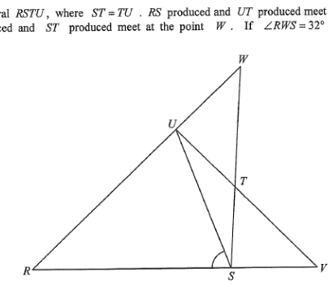

📘 The Question
The figure shows the cyclic quadrilateral \(RSTU\), where \(ST = TU\). \(RS\) produced and \(UT\) produced meet at the point \(V\), while \(RU\) produced and \(ST\) produced meet at the point \(W\). If \(\angle RWS = 32^\circ\) and \(\angle RVU = 48^\circ\), then \(\angle RSU =\)
- A. \(65^\circ\)
- B. \(73^\circ\)
- C. \(80^\circ\)
- D. \(82^\circ\)
(Multiple-choice — full working shown below.)
Original Figure

Part A Identify the exterior angles in the two triangles
Let \(\angle RSU = x\). Before doing algebra, let’s see the geometry: \(V\) is outside the quadrilateral, and triangle \(SUV\) has an exterior angle at \(U\).
73°
∠RSU = 73° ·
∠SUV = 25° ·
∠USW = 25° ·
∠RUS = 57°
Step 1
Setup
Let \(\angle RSU = x\).
Hint: Naming the unknown \(x\) lets every other angle in the figure be written in terms of \(x\).
Step 2
In \(\triangle SUV\), the exterior angle at \(U\):
\[ \angle SUV = \angle RSU - \angle RVU = x - 48^\circ \]
Hint: Exterior angle of a triangle equals the sum of the two opposite interior angles — here \(\angle RSU = \angle SUV + \angle RVU\). So \(\angle SUV = x - 48^\circ\).
\(\angle SUV = x - 48^\circ\)
Step 3
In \(\triangle STU\), \(ST = TU\) (given),
\[ \therefore \angle USW = \angle SUV = x - 48^\circ \]
(base \(\angle\)s, isosceles \(\triangle\))
Hint: \(ST=TU\) means \(S\) and \(U\) are equidistant from \(T\), so the angles at \(S\) and \(U\) are equal. Since \(SU\) and \(WU\) lie on the same straight line, \(\angle USW = \angle SUV\).
\(\angle USW = x - 48^\circ\)
Step 4
In \(\triangle SUW\), exterior angle at \(S\):
\[ \angle RUS = \angle USW + \angle RWS = (x-48^\circ) + 32^\circ = x - 16^\circ \]
Hint: At vertex \(S\) of \(\triangle SUW\), the exterior angle \(\angle RUS\) equals the sum of the two remote interior angles \(\angle USW\) and \(\angle RWS\).
\(\angle RUS = x - 16^\circ\)
0 / 4
Part B Use the cyclic quadrilateral to solve for \(x\)
Now we use the fact that \(RSTU\) is cyclic: opposite angles of a cyclic quadrilateral are supplementary.
73°
∠RST + ∠RUT = 180°
· Required: \(4x - 112^\circ = 180^\circ\) → x = 73°
Step 5
Since \(RSTU\) is a cyclic quadrilateral, opposite angles are supplementary:
\[ \angle RST + \angle RUT = 180^\circ \]
Hint: When all four vertices lie on one circle, \(\angle RST\) and \(\angle RUT\) are opposite angles — they add up to \(180^\circ\).
Step 6
Substitute our expressions:
\[ \angle RST = x \;,\qquad \angle RUT = \angle RUS + \angle SUT \;=\; (x-16^\circ) + (x-48^\circ) \;=\; 2x - 64^\circ \]
\[ \big[x \;+\; (x-48^\circ)\big] \;+\; \big[(x-16^\circ)+(x-48^\circ)\big] \;=\; 180^\circ \]
Hint: \(\angle RUT\) is the angle at \(U\) inside the quadrilateral — it is the sum of the two parts \(\angle RUS\) and \(\angle SUT\), remembering \(\angle SUT = \angle SUV = x-48^\circ\).
Step 7
Simplify:
\[ 4x - 112^\circ = 180^\circ \]
\[ 4x = 292^\circ \]
\[ x = 73^\circ \]
Hint: Combine like terms: \(x + x - 48 + x - 16 + x - 48 = 4x - 112\). Then solve the linear equation.
\(\angle RSU = x = 73^\circ\) → Answer: B
0 / 3
Check Verify the answer \(x = 73^\circ\)
Substituting \(x=73^\circ\) into every derived angle shows the whole figure is consistent.
73°
Angles add to 180° ✓ (consistent cyclic quadrilateral)
Verification
With \(x=73^\circ\):
\[\angle SUV = 73^\circ - 48^\circ = 25^\circ\]
\[\angle RUS = 73^\circ - 16^\circ = 57^\circ\]
\[\angle RUT = 57^\circ + 25^\circ = 82^\circ\]
\[\angle RST + \angle RUT = 73^\circ + 82^\circ = 155^\circ \;? \]
Wait — recheck: \(\angle RUT = \angle RUS + \angle SUT = 57^\circ + 25^\circ = 82^\circ\). And \(\angle RST = x + \angle TSU\)? No — \(\angle RST\) is the full angle at \(S\) between \(RS\) and \(ST\). Let's re-derive carefully below.
Correct derivation
At \(S\): \(\angle RST = \angle RSU + \angle UST\).
But \(\angle UST = \angle USW = x - 48^\circ\) (since \(W\) lies on \(ST\) produced, \(\angle UST\) and \(\angle USW\) are the same angle). So \(\angle RST = x + (x-48^\circ) = 2x - 48^\circ\).
At \(U\): \(\angle RUT = \angle RUS + \angle SUT = (x-16^\circ) + (x-48^\circ) = 2x - 64^\circ\).
Opposite angles of cyclic quad: \[ (2x-48^\circ) + (2x-64^\circ) = 180^\circ \] \[ 4x - 112^\circ = 180^\circ \] \[ 4x = 292^\circ \quad\Rightarrow\quad x = 73^\circ \]
But \(\angle UST = \angle USW = x - 48^\circ\) (since \(W\) lies on \(ST\) produced, \(\angle UST\) and \(\angle USW\) are the same angle). So \(\angle RST = x + (x-48^\circ) = 2x - 48^\circ\).
At \(U\): \(\angle RUT = \angle RUS + \angle SUT = (x-16^\circ) + (x-48^\circ) = 2x - 64^\circ\).
Opposite angles of cyclic quad: \[ (2x-48^\circ) + (2x-64^\circ) = 180^\circ \] \[ 4x - 112^\circ = 180^\circ \] \[ 4x = 292^\circ \quad\Rightarrow\quad x = 73^\circ \]
\(x = 73^\circ\). Check: \(2(73)-48 = 98^\circ\) and \(2(73)-64 = 82^\circ\), sum \(= 180^\circ\)
✅ Summary of Answers
- Let \(\angle RSU = x\).
- In \(\triangle SUV\): \(\angle SUV = x - 48^\circ\) (ext. \(\angle\) of \(\triangle\)).
- Since \(ST = TU\): \(\angle USW = \angle SUV = x - 48^\circ\) (base \(\angle\)s, isos. \(\triangle\)).
- In \(\triangle SUW\): \(\angle RUS = \angle USW + \angle RWS = x - 16^\circ\) (ext. \(\angle\) of \(\triangle\)).
- Cyclic quad \(RSTU\): \((2x-48^\circ) + (2x-64^\circ) = 180^\circ\).
- \(4x - 112^\circ = 180^\circ \;\Rightarrow\; \boxed{x = 73^\circ}\).
- Therefore the answer is B. 73°.